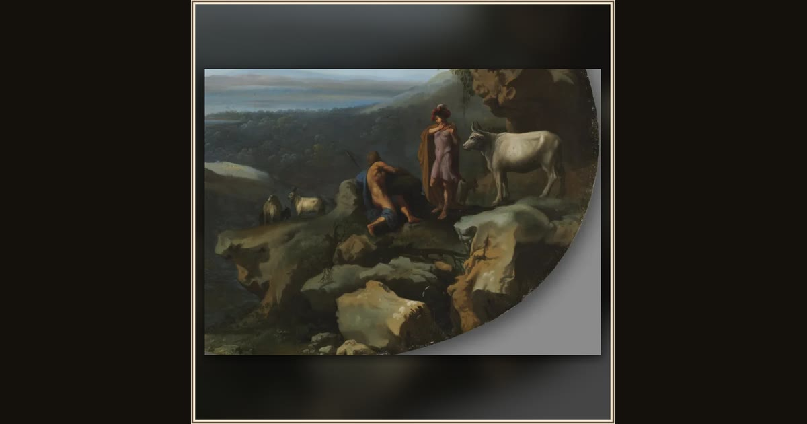

Mercury and Argus in a Landscape
Dirck van der Lisse (Dutch, 1669) · c. 1635 · cma
Mercury stands beside the seated Argus and a white cow; the king names the all-seeing guard Hera placed over Io (303). Explore its place in Aeschylus's Plays, Supplices, line 308.